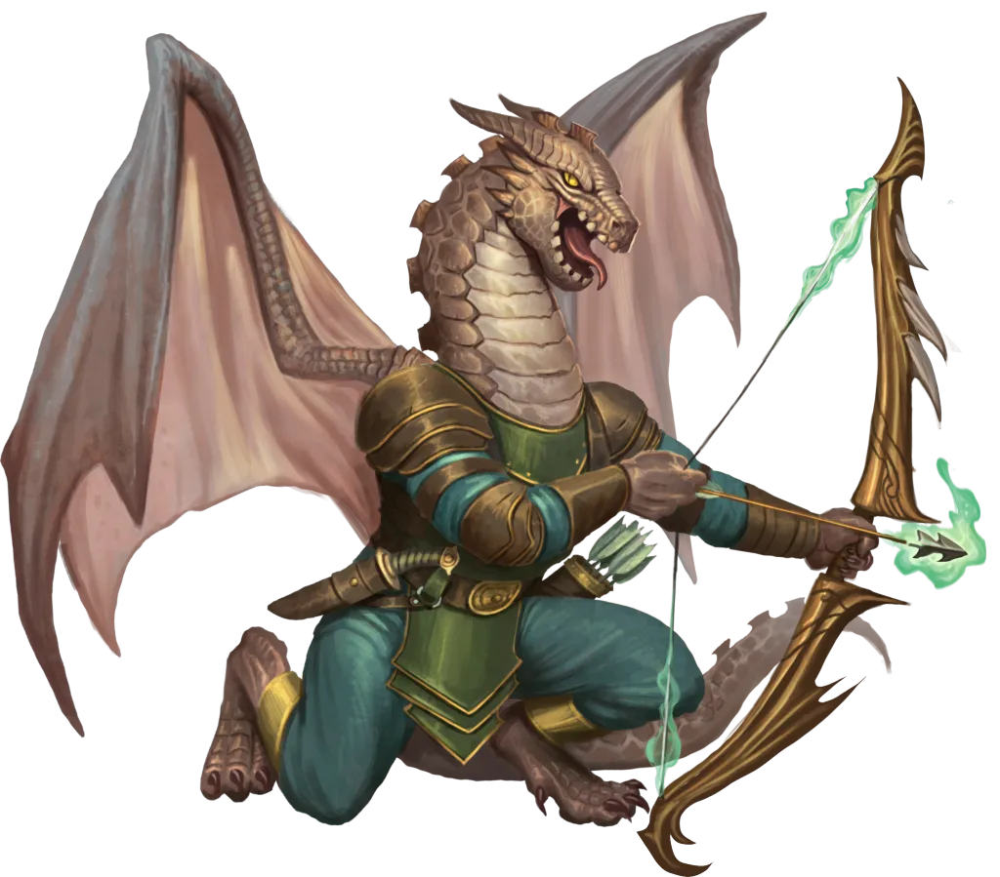

|
巨龙是强横非凡的存在，无论血统或年龄如何，都能在战场上建立赫赫战功。然而其中有一类巨龙截然不同――它们不仅善于战斗，更是为战而生。这些战龙精通百般武艺与各类兵法战事，无论是单打独斗的决战，还是动辄数万大军交锋的宏大战役皆能游刃有余。每一条战龙体内都潜藏着无穷无尽的未开发潜能……而当一场强大的仪式将这份潜能彻底释放时，又会发生什么？ 你是一条督军龙，将统率大军、征战沙场视为伴随终生的天命，直至死亡降临的那一刻。你属于战龙家族的一员。你的关联伤害类型为雷鸣，且你的吐息武器为 15 尺锥状，需进行敏捷豁免。 巨龙特质属性值提升。你的力量或魅力值提升 2 点。 年龄。任何年龄段的巨龙都可以举行永恒之光仪式，因此哪怕是一条刚完成仪式的初生永光龙，严格来说也可能已经活了数千岁。不过，仪式澎湃的魔法能量会洗去衰老的痕迹。从仪式中苏醒的初生永光龙洋溢着青春活力与无限潜能。尽管部分学者持不同看法，但只要不死于暴力或其他灾祸，永光龙的寿命与传统派巨龙同样漫长。 阵营。永光龙的龙族血统会强烈影响其信念，但影响程度远不如同血统的传统派巨龙。例如，银永光龙往往是善良的捍卫者，而黑永光龙则往往狡诈刻薄。然而，永光龙深知龙脉并非不可违逆的宿命。任何永光龙都可以完全抛弃先祖的旧习，去开拓属于自己的道路。 体型。除非一条永光龙将自身魔力专注于增大体型（许多永光龙都会这样做），否则它们的体型并不会比常见的类人种族更大。你的体型可在小型或中型之间自选。 速度。你的基础步行速度为 30 尺。 黑暗视觉。你同样具备传统派巨龙的敏锐感官。在距离你 60 尺范围内，你可以将微光光照视作明亮光照，将黑暗视作微光光照。你在黑暗中无法分辨颜色，只能看到灰度的影像。 龙之馈赠。你从巨龙职业所列的龙之馈赠中获得一项龙之馈赠。如果某项馈赠具有先决条件，你必须满足其先决条件才能获得它。 龙类。你的生物种类为龙类，而非类人生物。 天生武器。除常规的徒手打击外，你还获得两种天生武器攻击：啃咬攻击与爪击攻击。你的啃咬攻击造成 1d6 点穿刺伤害；你的爪击攻击造成 1d4 点挥砍伤害。 你必须至少有一只手空闲才能发动爪击攻击。 你在进行爪击攻击的攻击检定和伤害掷骰时可以使用敏捷代替力量，但啃咬攻击不适用。 语言。你能够说、读、写通用语和龙语。 天生领袖。你具有游说技能的熟练项。 战争学识。你具有历史技能的熟练项。此外，你为回想过往战役知识而进行的智力（历史）检定具有优势。 永光督军龙背景设定督军龙举行永恒之光仪式的缘由与其他巨龙大同小异，只是会经过它们自身独特价值取向的审视与权衡。在督军龙看来，永恒之光仪式不过是武器库中的又一件工具，尽管是一件需要深思熟虑方能动用的工具。诉诸这场仪式究竟是顺应天命，还是自己注定应当抗拒的诱惑？这正是每一条督军龙在举行仪式前都会反复叩问自己的问题。 在少数情况下，决定举行仪式的甚至未必是督军龙自己。偶尔，某支军队或某位霸主为了留住麾下伟大的统帅而操之过急，可能会向督军龙施压，迫使其违背自身判断举行仪式。尽管举行仪式与否归根结底仍由巨龙自己抉择，但在恰到好处的重压之下，往往会显得别无选择。对督军龙而言，此等行径无异于奇耻大辱的背叛，而绝大多数描绘此类事件的传说都没有圆满的结局。从这个角度来看，这些故事无异于警世恒言――不过说到底，无论是永恒之光仪式还是其他任何事，唯有蠢货才会妄图强迫一条巨龙违背自己的意志行事。 鉴于这种慎重的观念，与其他巨龙世系的永光龙相比，永光督军龙的年龄往往偏长。对许多督军龙而言，这一过程宛如脱胎换骨或重获新生，几乎无异于死而复生或转世重修。永光督军龙常常发现，自己必须重新认识“我是谁”以及“我能做什么”。如何当好一名出色的统帅、士兵或战士，有时甚至不得不暂时让位于对自身身份认同的探寻。这场重新学习的过程可能持续数十年之久，意味着督军龙不得不站在一旁，眼睁睁看着短寿的盟友日渐衰老，旁观昔日自己统率的军队经历凯旋与败绩。所幸的是，对于许多追寻自身天命的督军龙而言，历史往往会恰逢其会地赐予它们一段和平时期――或者至少是在暗流涌动之下维持着表面和平的间隙――好让它们在下一场战火召唤之前重新找回自我。 除了能力与生理上的改变之外，永光督军龙的心态也会发生显著变化。具体变化因龙而异：有些巨龙只是变得不再那么矜持内敛，而另一些则在经历自身的牺牲之后开始质疑个体生命的价值，变得更愿意为了“大局”而牺牲麾下士卒。大多数时候，往往是巨龙身边的同伴最先察觉到这种变化，而永光督军龙自己却并不觉得性格改了多少。对部分永光督军龙而言，最大的收获莫过于真正成为军中一员、与战友同甘共苦的袍泽之情，而不再只是高高在上、疏离地俯瞰麾下将士的威严巨影。许多永光督军龙都为能够与盟友并肩冲锋陷阵而深感自豪；对于习惯了高空俯瞰战局的它们而言，贴近地面短兵相接的热血激战更是一种令人欣喜的全新体验。 复杂的天命传统派督军龙往往将永恒之光仪式视作必须抵御的诱惑，以及应当避免的不可逆抉择。在整个战龙家族之中，督军龙是最少举行该仪式的一支。话虽如此，传统派督军龙对仪式本身以及任何举行过仪式的同族都毫无轻蔑或鄙夷之意；相反，它们认为永光督军龙是为了成就更宏大的天命而作出牺牲的同伴。 延伸阅读：对应怪物图鉴：督军龙 ・ 主书通用巨龙种族特质 ・ 巨龙职业 ・ 本卷新增龙之馈赠 |
 督军龙（Warlord Dragon） |